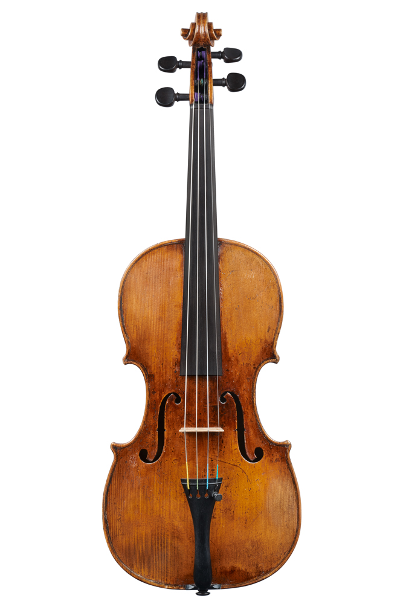

<div class="thumbnails">
  
  
  
  
  
  
  
  
</div>

<script>
  let viewer = OpenSeadragon({
    id:"openseadragon",
    prefixUrl:"https://cdnjs.cloudflare.com/ajax/libs/openseadragon/4.1.0/images/",
    tileSources:"giuseppe-guadagnini-1785-vn-01-01_tiles.dzi"
  });

  const thumbs = document.querySelectorAll(".thumbnails img");
  thumbs.forEach(t=>{
    t.addEventListener("click", ()=>{
      thumbs.forEach(i=>i.classList.remove("active"));
      t.classList.add("active");
      viewer.open(t.dataset.dzi);
    });
  });
</script>
